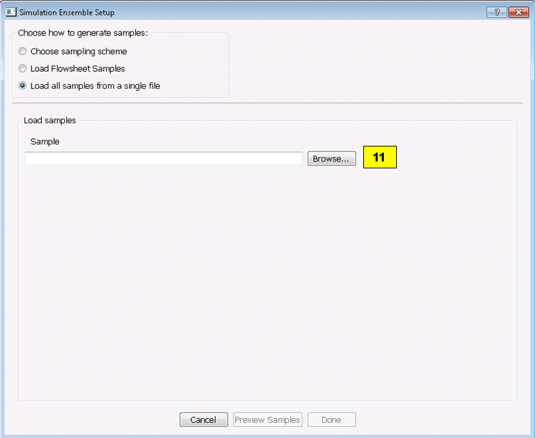

[sec:uq_overview]
Reference¶
The Uncertainty Quantification (UQ) module of FOQUS provides a multitude of analysis and visualization capabilities to facilitate the understanding of uncertainty’s impact on a given system. In a generic UQ study, the workflow is usually comprised of the following steps:
- Define the objectives of the analysis.
- Specify and acquire the simulation model, which implements an input-to-output mapping from inputs to outputs.
- Select the inputs that have uncertainty and characterize said uncertainty in the form of prior distributions.
- Identify relevant data from physical experiments that can be used to refine these prior distributions on the inputs.
- Generate a set of input samples according to the input distribution.
- Propagate the set of input samples through the simulation model to get the corresponding output values.
- Analyze the results to make informed decisions about subsequent analyses.
FOQUS UQ provides tools to perform Steps 5-7. With respect to Step 7, a variety of analysis capabilities are available. They include parameter screening methods, response surface construction/validation/prediction, uncertainty analysis, sensitivity analysis, and visualization.
In this chapter, components of the UQ user interface are first explained, then the use of these components for UQ analyses is illustrated.
UQ User Interface¶
The UQ module enables the user to perform UQ studies on a flowsheet. From the Uncertainty button on the Home window, the user can configure different simulation ensembles (different sets of samples generated using different sampling schemes), run them, and perform analyses. This screen is illustrated in Figure [fig:uq_screen].

Uncertainty Quantification Screen
[fig:uq_screen]
Simulation Ensemble Table displays all of the simulation ensembles: each ensemble being a row in the table. A simulation ensemble is a collection of sample points where each sample point has a different set of values for the uncertain variables. The values of these variables are generated based on the sampling scheme designated by the user. When launched, the output values of the sample points are calculated based on the generated sample input values. Subsequently, the corresponding simulation outputs can be analyzed. For each ensemble, the table displays the Ensemble index, Run Status (how many have been completed), Setup and Launch options (discussed below), and a Descriptor. The Descriptor contains the name of the corresponding node in the flowsheet or the name of the file if the ensemble was loaded from a file. Additional sample information such as # Inputs, # Outputs, Sample Design, and Sample Size are also displayed on the right.
- Add New creates a simulation ensemble (a set of input samples) as a new row in the Simulation Ensemble Table. Once clicked, a dialog is displayed to prompt the user to choose between using (1) a flowsheet (an exact simulation model) or (2) a response surface (an approximate simulation model or an emulator) associated with the ensemble.If using an emulator, the user must browse a PSUADE-formatted file that contains the training data for the emulator (in this version, the response surface type has been designated inside the sample file and can only be changed by editing the sample file) and select the output(s) to be evaluated by the trained emulator. Subsequently, a simulation setup dialog box is displayed for setting up the distributions of input variables and the sampling scheme to generate samples of the uncertain input variables. This Simulation Ensemble Setup dialog is explained in further detail in Section 1.1.
Load from File loads a simulation ensemble from a sample file that conforms to the PSUADE full file format. (See Section [ap:psuadefiles] for details on the PSUADE full file format.) The user can click Save Selected to save an existing ensemble as a PSUADE full file, and load it by clicking Load from File to perform further analyses.
Clone Selected clones the selected simulation ensemble and adds the copy as a new row at the end of the table. This ensemble can then be edited (e.g., depending on whether the ensemble has been run, the user has different options for modifying the ensemble). This allows the user to create a new ensemble similar to the current ensemble without having to start from scratch (i.e., setting up the input parameters). For example: (1) Clone Selected can be used in conjunction with Load from File to clone an existing ensemble before input/output modification to prepare a new but similar ensemble for UQ analysis. (2) Clone Selected can also be used to prepare a fresh ensemble for evaluation via a different simulation model. In this case, the user should save the cloned ensemble, reload it by clicking Add New, associate it with a node, and then click Launch to start the runs.
Delete Selected deletes the currently selected simulation ensemble.
Revise enables a user to change a simulation ensemble before launching the run. If the ensemble was previously run or it is cloned from an already-generated sample, the corresponding button becomes View so the user can view the input samples in the simulation ensemble.
Launch starts the simulation process of the ensemble. (Launch is not enabled until the user has setup everything needed for simulations.) A simulation is launched for each sample point to compute the corresponding outputs.
Analyze, when enabled (after all simulation results are ready), enables the user to perform various UQ analysis to the ensemble. When clicked, a new dialog box displays, allowing the user to configure and run analysis.
Data Manipulation enables (1) the deletion of inputs, outputs, or samples, (2) the modification of output values for specific sample points, and (3) the range-based filtering of samples.
Inspection/Deletion/Output Value Modification serves three purposes: it enables the user to (1) view the numerical values of samples in table form, (2) delete variables and/or samples, and (3) edit the output values of specific samples. Deletion creates a new simulation ensemble as a new row in the simulation table that contains only those inputs/outputs and samples that were not selected for deletion. Output Value Modification changes the values within the ensemble itself.
Filtering enables the user to filter samples based on the values of an input or output. First, select the ensemble to be filtered from the Simulation Ensemble Table. Once filtering is complete, a new simulation ensemble is added as a new row in the simulation table. The new simulation ensemble contains only those samples that satisfy the filtering criterion (with input or output samples within the specified range).
Reset Table resets the table to default, meaning all variable and sample selections are unselected and output values within the table are reverted back to their original values, thus undoing any edits to the table.
The table displays the values of inputs and outputs for each sample. Inputs are highlighted in pink; outputs are highlighted in yellow. The user can select which variables (columns) to delete by selecting the checkboxes on top. Likewise, the user can select which samples (rows) to delete by selecting the checkboxes on the left. Multiple samples can also be selected/deselected by using (1) Shift+Click or Ctrl+Click to select multiple rows, or (2) right-clicking to bring up a menu to check or uncheck the checkboxes corresponding to the rows of the selected samples. In addition, the user can change any output value by editing the appropriate cell. These modified cells are highlighted green until changes are made permanent by clicking the appropriate button.
Perform Deletion then Save as New Ensemble creates a new simulation ensemble as a new row in the Simulation Ensemble Table. The new ensemble is without the variables and samples that were previously selected for removal.
Make Output Value Changes Permanent overwrites the output values in the current ensemble with those that are highlighted green in the table.
The Filtering tab is illustrated in Figure [fig:uq_deltab] and enables the user to filter samples based on the values of an input or output.
Filtering Tab
[fig:uq_deltab]
Filter Input filters based on the value of a certain input. Select an input variable as the filter target, and enter the lower and upper thresholds to specify a range of values to be kept in the new ensemble.
Filter Output filters based on the value of a certain output. Select an output variable as the filter target, and enter the lower and upper thresholds to specify a range of values to be kept in the new ensemble.
Once the filter settings are set, click Perform Filtering then Save as New Ensemble to apply the filter and create a new simulation ensemble.
The single-output Analysis of Ensemble dialog, which is displayed when Analyze is clicked for the selected ensemble, has two modes, as shown in Figure [fig:uq_analysisW] and Figure [fig:uqt_rsaeua].
Analysis Dialog, Ensemble Data Analysis, Wizard Mode
[fig:uq_analysisW]
Select Wizard or Expert mode. The Wizard mode provides more detailed guidance on how to perform UQ analysis. For users familiar with UQ analysis techniques, the Expert mode provides more functionality and flexibility but with less guidance on its use. For example, users will be able to customize the input distributions, as well as run more advanced uncertainty analysis that handles both epistemic and aleatory uncertainties.
The Analyses Performed section provides the user a history of previous analyses that were performed. The results of these analyses are cached, so the user can plot the analysis results without having to recompute them.
The Analysis Table populates as the user performs analyses. It lists previous analyses that the user has performed, along with some of the main analysis settings (analysis type, inputs and outputs analyzed, etc.)
Depending on the type of analysis performed, the Additional Info button displays any additional settings or parameters set by the user in the selected analysis that were not shown in the Analysis Table.
The Results button will display the results of the selected analysis.
The Delete button will delete the selected analysis from the history of previous analyses. Once deleted, the user will need to perform the analysis again to see its results.
The Qualitative Parameter Selection (top part of the Analysis of Ensemble dialog) houses the controls for parameter selection analysis. Parameter selection is a qualitative sensitivity analysis method that identifies a group of dominant input parameters that are recommended for inclusion in subsequent UQ analyses, as they are the ones that most impact the output uncertainty. The parameter screening results are shown as bar graphs so that the user can rank the uncertain parameters visually.
Before performing parameter selection, the user must select a single output for identifying parameter sensitivities from the Choose output to analyze drop-down list.
There are several methods of parameter selection. The list of parameter selection methods available depends on the sample scheme of the selected ensemble. Select the appropriate method from the Choose Parameter Selection Method drop-down list. Then click Compute input importance to start the analysis.
The Ensemble Data radio button directs FOQUS to perform analyses on the raw ensemble data.
To view plots of the raw ensemble data, choose the desired input(s) from the Select the input(s) drop-down lists. Then click Visualize. If multiple inputs are selected, each must be unique.
To perform an analysis, select the desired analysis (“Uncertainty Analysis” or “Sensitivity Analysis”) from the Choose UQ Analysis drop-down list. Uncertainty Analysis computes and displays the probability distribution of the single selected output parameter and displays its sufficient statistics, such as mean, standard deviation, skewness, and kurtosis. Sensitivity Analysis computes and displays each uncertain input parameter’s contribution to the total variance of the output. If Sensitivity Analysis is selected, choose the type of sensitivity analysis desired in the next drop-down list. There are three options for Sensitivity Analysis: (1) first-order, (2) second-order, and (3) total-order.
- First-order analysis examines the effect of varying an input parameter alone.
- Second-order analysis examines the effect of varying pairs of input parameters.
- Total-order analysis examines all interactions’ effect of varying an input parameter alone and as a combination with any other input parameters.
Click Analyze to run the analysis. (Note: Raw ensemble data analysis may not be suitable if the sample size is small. It may be useful if the data set has tens of thousands of sample points or if an adequate response surface cannot be constructed. Otherwise, response surface-based analyses are recommended.)

Analysis Dialog, Response Surface Analysis, Wizard Mode
[fig:uq_analysisW2]
[itm:uq_analysis]
Response Surface enables the user to perform all analyses related to response surfaces. A response surface is an approximation of the input-to-output relationship. This is an inexpensive way to approximate the values of outputs given different input values when the actual simulation of output values is computationally intensive. FOQUS uses the data (i.e., input-output samples) to fit a response surface scheme. The first step in this analysis is to select which output to analyze.
Select the Response Surface Model to be used to approximate the input-to-output mapping. Selection of “Polynomial” or “MARS” requires one further selection in the second drop-down list. If “Polynomial” is chosen in the first drop-down list and “Legendre” is chosen in the second drop-down list, the user needs to specify a number for the Legendre polynomial order before analysis can proceed. [itm:uq_rs]
The response surface selected must be validated before further analyses can be performed. The user can specify the error envelope for the validation plot. When Validate is clicked, the resulting plots display the best fit between the response surface (based on the model selected) and the actual data.
Choose UQ Analysis enables the user to perform response-surface-based UQ analyses. Select the analysis in the first drop-down list. If the desired analysis is Sensitivity Analysis, select the desired type of sensitivity analysis in the second drop-down list and then click Analyze. Uncertainty Analysis and Sensitivity Analysis compute and display the same quantities as in item #[itm:uq_analysis]. However, the results displayed are based on samples drawn from the trained response surface, not the simulation ensemble itself. Moreover, if the selected response surface has uncertainty, the resulting plots also reflect this uncertainty information.
FOQUS also provides visualization capabilities, enabling the user to view the response surface as a function of one or multiple inputs. Up to three inputs can be visualized at once. Click Visualize to view. A 2-D line plot displays if only one input parameter is selected. A 3-D surface plot and a 2-D contour plot display if two input parameters are selected. A 3-D isosurface plot with a slider bar displays if three input parameters are chosen. For the isosurface plot, the user can use the slider to selectively display the 3-D input parameter space that activates a particular range in the output parameter.
Finally, the Bayesian Inference of Ensemble dialog (shown in Figure [fig:uq_inf]) is used to calculate the posterior distributions (prior distributions integrated with data) of the uncertain input parameters. Inference utilizes Markov Chain Monte Carlo (MCMC) to compute the posterior distributions, using response surfaces that serve as fast approximations to the actual simulation model.

Bayesian Inference Dialog
[fig:uq_inf]
Inference uses a response surface to approximate the input-to-output mapping. In Output Settings, select the observed outputs and select the response surface type that works best with each observed output. As in item ([itm:uq_rs]), further selections may be required based on the response surface chosen. The simulation ensemble is used as the training data for generating the response surfaces.
The user can specify which inputs are fixed, design (fixed per experiment, but changes between experiments), or variable using the Input Settings Table. In addition, the user can specify which inputs are displayed in the resulting plots of the posterior distributions. By default, once inference completes, all inputs will be displayed in the plots. To omit specific inputs, clear the checkboxes from the Display column of the table. Finally, in Expert mode, this table can also be used to modify the input prior distributions. The default prior is the input distribution specified in the simulation ensemble. To change the prior distribution type, use the drop-down list in the PDF column and enter corresponding values for the PDF parameters. To change the range of a uniform prior, scroll all the way to the right to modify Min/Max.
The Observations section enables the user to add experimental data in the form of observations of certain output variables. At least one observation is required. Currently, the observation noise model is assumed to be a normal distribution. Other distributions may be supported in the future. To specify the observation noise model, enter the mean (and standard deviation, if standard inference is selected) for each output observation. For convenience, the Mean and Standard Deviation fields have been populated with the statistics from the ensemble uncertainty analysis. If any inputs are selected as design inputs, their values will also be required here.
Save Posterior Input Samples to File checkbox, when selected, saves the posterior input samples as a PSUADE sample file (format described in Section [ap:psuadefiles]). This file characterizes the input uncertainty as a set of samples, which can be re-used in the Simulation Ensemble Setup dialog, to evaluate the outputs corresponding to these posterior input samples.
If saving posterior samples to a file, click Browse to set the name and location of where this file is saved.
Click Infer to start the analysis. (Note: If the inference returns an invalid posterior distribution (i.e., one with no samples), it usually means the prior distributions or that the observation data distributions are not prescribed appropriately. In this case, it is recommended that the user experiment with different priors and/or data distribution means and/or standard deviations.)
Inference calculations often take a very long time. If inference has run to completion, use Replot to generate new plots (e.g., to only display a subset of the input posterior graphs) from the cached inference results.
Simulation Ensemble Setup Dialog¶
The Simulation Ensemble Setup dialog (shown in Figure [fig:uq_sim_dist]) is used to create a new simulation ensemble. This is done by: (1) setting up distribution parameters and generating samples, or (2) loading samples from a file. This dialog is displayed when selecting Add New on the UQ window (Figure [fig:uq_screen]).

Simulation Ensemble Setup Dialog, Distributions Tab
[fig:uq_sim_dist]
Choose how to generate samples. There are three options: (1) Choose sampling scheme (default), (2) Load flowsheet samples, or (3) Load all samples from a single file. The option 3 is explained in item ([itm:uq_sim_last]). [itm:uq_sim_first]
If Choose Sampling Scheme is selected, the Distributions tab is displayed. The user specifies the input uncertainty information.
The Distributions Table is pre-populated with input variable information gathered from the flowsheet node. Under the Type column drop-down list, the user can select “Fixed” or “Variable”. Selecting “Fixed” means that the input is fixed at its default value for all the samples. Changing the type to “Variable” means that the input is uncertain; therefore, its value varies between samples. With any fixed input, the only parameter that can be changed is the Default value (i.e., all samples of this input are fixed at this default value). With any variable input, the Min/Max values, as well as the probability distribution function (PDF), for that input can be changed. Some PDFs have their own parameters (e.g., mean and standard deviation for a normal distribution), which are required in the columns right of the distribution column. See the PSUADE manual for more details on the different PDFs.
All Fixed and All Variable are convenient ways to set all the inputs to variable or fixed.
Note: A “Sample” PDF refers to sampling with replacement (i.e., input samples would be randomly drawn, with replacement, from a sample file). If the selected distribution for any input is “Sample”, then the following parameters are required: (1) the path of the sample file (which must conform to the sample format specified in Section [ap:psuadefiles]); (2) the output index that designates which output is to be used.
In the Sampling scheme tab (Figure [fig:uq_sim_samplescheme]), specify the sampling scheme, the sample size, and perform sample generation.

Simulation Ensemble Setup Dialog, Sampling Scheme Tab
[fig:uq_sim_samplescheme]
Each radio button displays a different list of sampling schemes on the right. The radio buttons serve as a guide to help in the selection of the appropriate sampling schemes for target analyses. A sampling scheme must be selected from the list on the right to proceed.
Set the number of samples to be generated from the # of samples spinbox.
When all parameters are set, click Generate Samples. This generates the values for all the input variables, based on the sampling scheme selected.
Once samples have been generated, click Preview Samples to view the samples that were generated. This displays the sample values in table form, as well as graphically as a scatter plot.
From item ([itm:uq_sim_first]), if the user elects to load all samples from a single file, click Browse to select the file containing the samples (Figure [fig:uq_sim_loadsample]). This file must conform to the PSUADE full file format, the PSUADE sample format, or CSV file (all formats described in Section [ap:psuadefiles]). Note: This is the only place where all the formats are supported. Once the file is loaded, the file name displays in the text box. These samples can now be used in the same way as an ensemble that was newly generated (as described above).
Simulation Ensemble Setup Dialog, Load Samples Option
[fig:uq_sim_loadsample]
[itm:uq_sim_last]